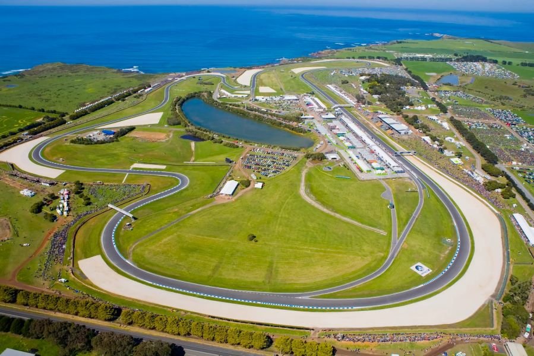
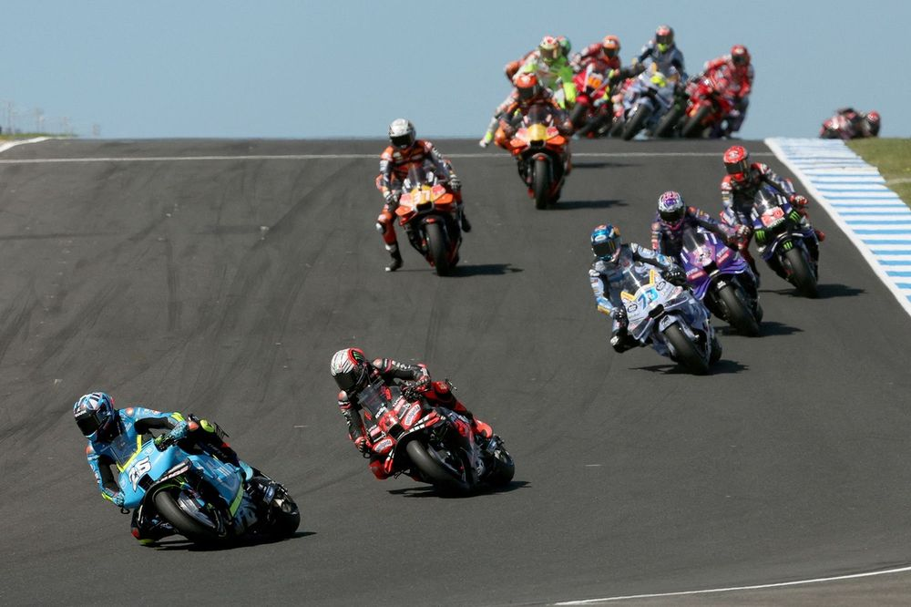
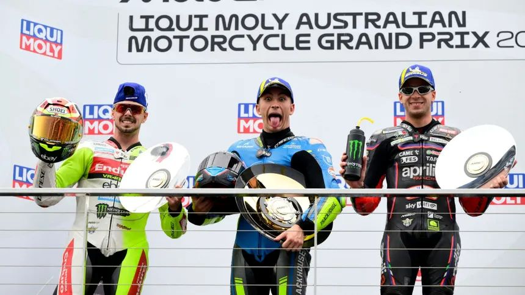

Circuito
- Nombre: Phillip Island Grand Prix Circuit
- Numero de Vueltas: 27
- Patrocinador: Australian Motorcycle Grand Prix
- Fecha: 2025-10-19
- Hora: 16:00
Longitud del circuito
4448 m
Anchura del circuito
12 m
Localizacion
Phillip Island, Victoria; Australia
Referencias
Galeria de Fotos



Galeria de Videos
Vencedor del Gran Premio
Raul Fernandez
Tiempo final - 00:37:49.571
Clasificacion tras Carrera
- 1. Marc Marquez (545 puntos)
- 2. Alex Marquez (379 puntos)
- 3. Marco Bezzechi (282 puntos)